大學就像是一個餐廳，不僅要吃，更要學習怎麼做。
step1 : 登錄 github 帳號，新建一個 New repository ，名稱為 : 學號.github.io
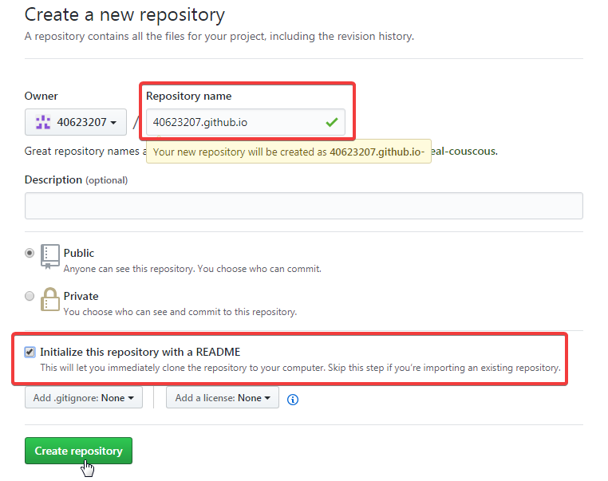
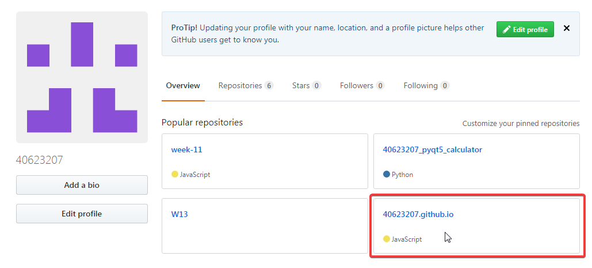
step2 : 將新增的倉儲與老師的一起 clone 下來
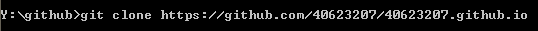
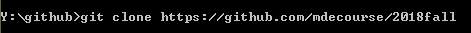
step3 : 將老師的資料複製到自己的資料夾中 ( 除了 .git 和 README.md )
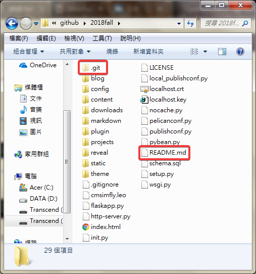
step4 : 用 SciTE 查看是否有正確綁定帳號
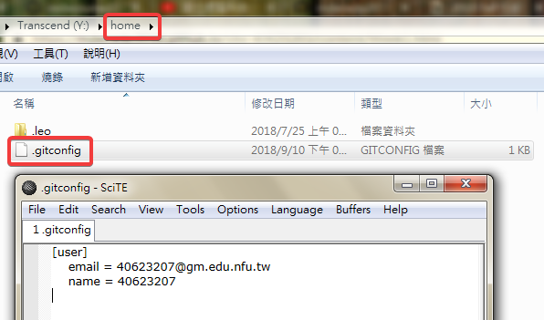
step5 : 用 git status 查看所有檔案目前的狀況，之後再 git add . (增加) → git commit -m "initial add " (提交) → git push (推送)，將新增的檔案推送上去
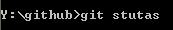
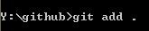
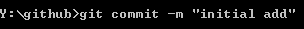
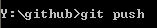
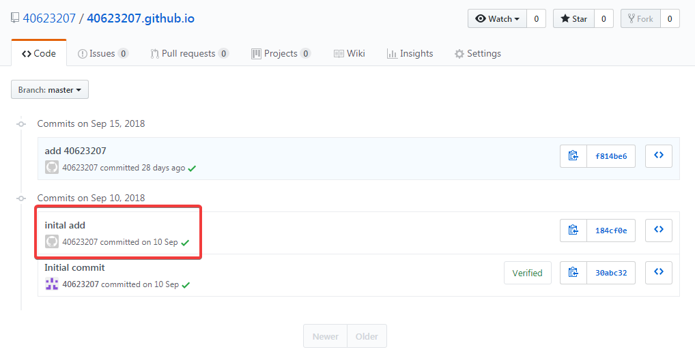
step6 : 輸入python wsgi.py ，進入近端 https://localhost:8443，更改標題名稱
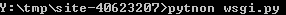
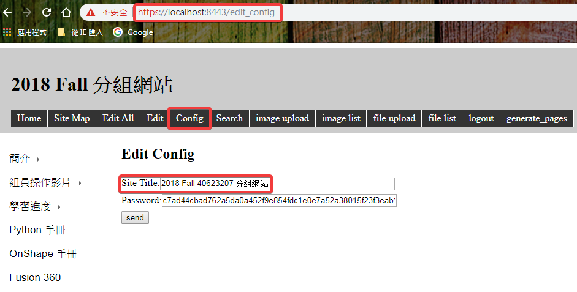
step7 : 按下 generate_pages 推到靜態
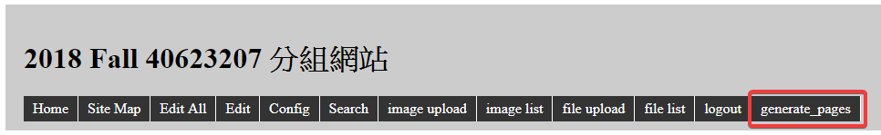
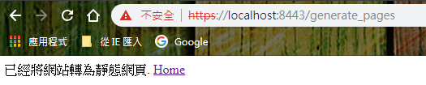
step8 : 將 http-server.py 拉到 SciTE 並且 Go 它，查看靜態網址
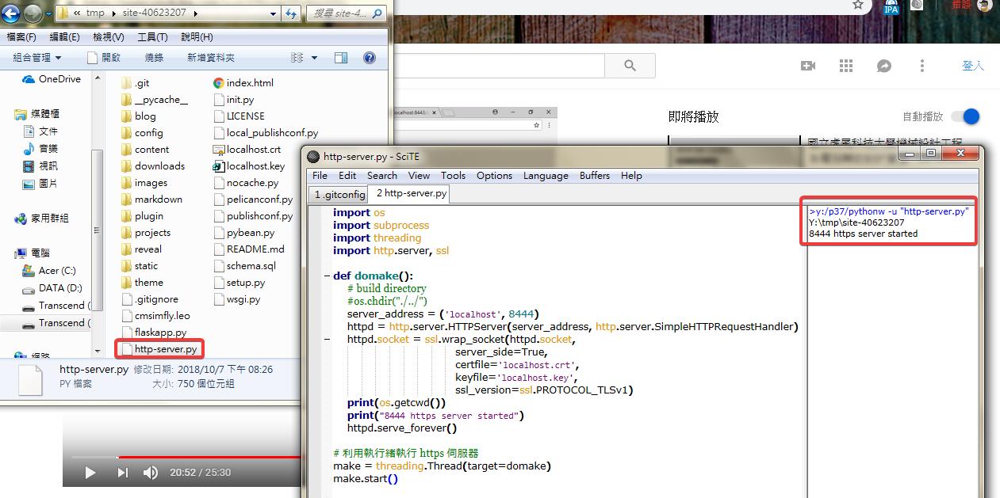
step9 : 進入 https://localhost:8444，確認有推成功
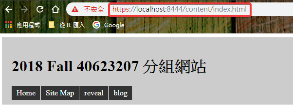
step10 : 重複 git 推送步驟，推送至遠端
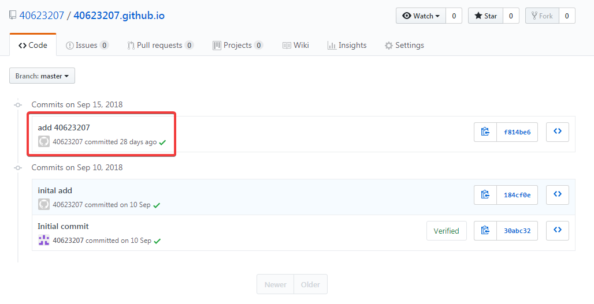
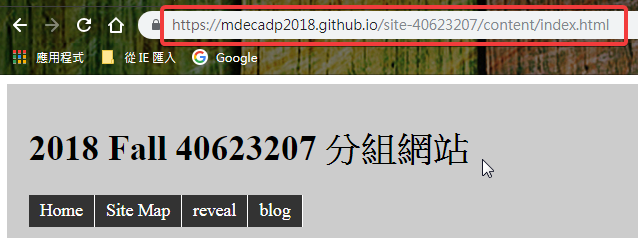
問題1:What is Onshape?
https://en.wikipedia.org/wiki/SolidWorks
https://en.wikipedia.org/wiki/Onshape
問題2:Why Onshape?
https://www.onshape.com/cad-blog/7-reasons-why-onshape-better-protects-your-cad-data
https://www.g2crowd.com/products/onshape/reviews
課程內容 :
建立一個學號.github.io的個人倉儲，並git clone到近端，且示範如何管理CMSimfly靜態網頁、編輯簡報內容，如何建立網誌（近端檢視，遠端加入disqus討論區連結）。
登入 Github 帳號後, 連結至 https://classroom.github.com/a/fGqXU9kO 以領取個人的期中作業。
心得 :
上課第一週，又再次接觸到了 github，一開始還很擔心會不會過了一個學期就都把相關指令忘掉了，幸好基本都還記得，這學期會開始學習用 Onshape 來繪圖，還蠻期待的，希望以後可以熟用 Onshape。